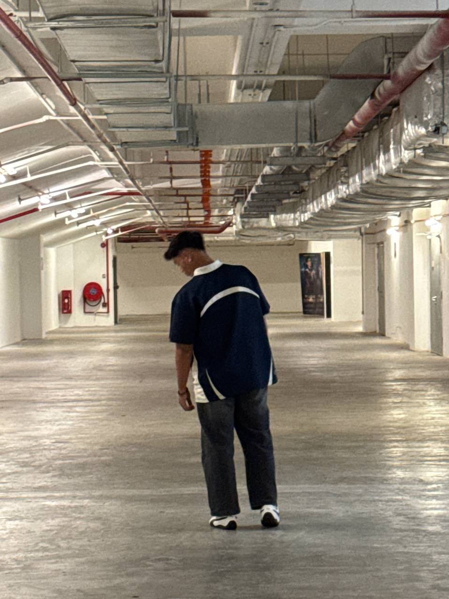

Diploma Teknologi Maklumat
Asas rangkaian, pengaturcaraan, pengurusan sistem, dan pembangunan web.
PELAJAR IT | KELANTAN, MALAYSIA

Diploma Teknologi Maklumat dengan fokus kepada asas rangkaian, sistem, dan pembangunan web.
Tentang
I am a Vocational College graduate with a strong technical foundation and practical experience through vocational skills training. I possess strong soft skills, proven through my active involvement as a Student Leader (MPP) and MFLS participant. I am committed to using my digital competence and teamwork spirit to contribute positively to your organization.
Mengaplikasikan kemahiran IT dalam projek sebenar dan terus meningkatkan kompetensi.
Pencapaian
Ringkasan kelayakan akademik dan pencapaian utama dalam bidang teknologi maklumat.
Asas rangkaian, pengaturcaraan, pengurusan sistem, dan pembangunan web.
CompTIA, MFLS, MPP, dan sijil tambahan lain dalam bidang teknikal.
Penglibatan dalam program, bengkel, dan aktiviti berkaitan IT.
Education
Ringkasan pendidikan dan bidang fokus utama.
Kolej Vokasional Pasir Mas
Kolej Vokasional Pasir Mas
Kolej Vokasional Pasir Mas
Kemahiran
Teknologi dan fokus pembelajaran semasa.
Subnetting, troubleshooting, konsep rangkaian
HTML, CSS, JavaScript, asas responsif
Dokumentasi teknikal, SOP, tiket sokongan
Experience
Technical aptitude with people-first leadership.
Hubungi
Open to internships & roles.